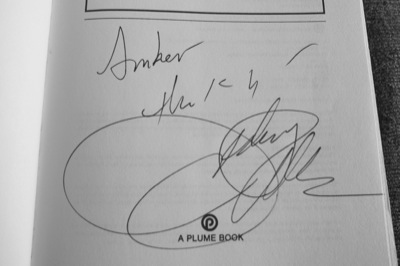

A Conversation with Dorothy Allison
at John Cabot
Last night when Dorothy Allison walked into the room for a second time I was no longer shocked at how her size didn’t reach the monolith in my mind. She took a seat between the two academics. Sarcasm breezed across her face as they listed her long achievements, again. She recounted an incident before a reading that her sister attended, who shouted in response to such a list, “Who do you think you are? Some kind of Renaissance woman!” (Remember the southern accent.)
Then the conversation got underway. Questions were posed, back and forth between two professors, one Carlos Dews, whose personal statement at the beginning made clear Allison’s influence on his work, and another whose name I have no clue. I can’t remember much about the questions, but that they were good and elicited good answers.
What I remember (and wrote down):
- When Dorothy Allison lived in NYC she was politically active, working as an editor at Poets and Writers and writing— Trash came out of this period. She recalled having twenty paid days off of work and using them to write the story The Gospel Song: her fiction became longer and more complex.
- The origins of Bastard Out of Carolina are in a nasty review of a book by Mab Segrest, My Mama’s Dead Squirrel. Allison thought that if the reviewer found those essays shocking then she wanted to give the reviewer a heart attack.
- Bastard took ten years to finish and 39 revisions.
- Allison set out to write “working class fiction in complicated ways.”
- The first time Allison met Toni Morrison was by lying her way into Random House. Toni Morrison stood super-human with confidence and conviction. She immediately saw that Allison had been lying, who slunk away unable to remember why she had come.
- She recalled when Bastard Out of Carolina was being made into a movie by Anjelica Huston. She doesn’t recommend the movie world to any writer, though it was with the movie rights that she was able to afford her house in Northern California.
- She talked for awhile about her upcoming novel, She Who. How she created a character based on the well-off students of Stanford, out of a class prejudice, then threw her off a building. About how she couldn’t write for two years and what kind of torture that is for a writer.
Then she got up to stand behind the podium—she said writers need to exercise and stretch—to read another short story entitled Jason. Again, her story and her voice strung me along; I envisioned what she was telling so vividly before me: the dust on Jason’s boots and the basement he wanted to get locked into to emerge brilliant and finally, loved. Dorothy Allison’s stories are heart rending. I almost started crying.

Dorothy Allison signed my book!
· · · · · · · · · · · · · · · · · · · ·